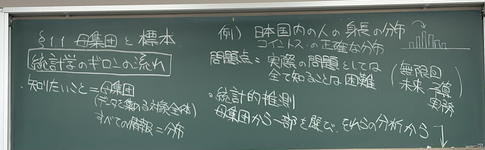
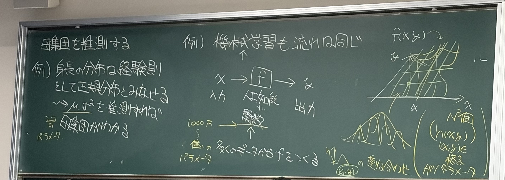
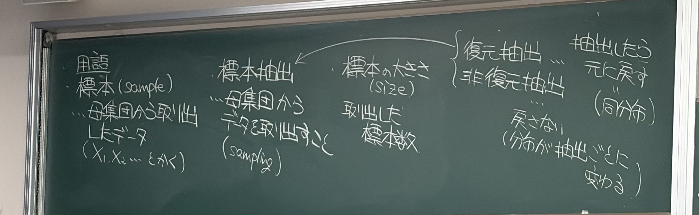
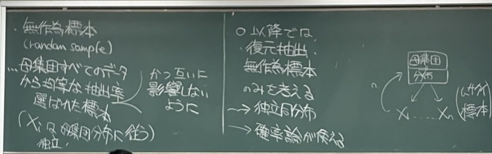
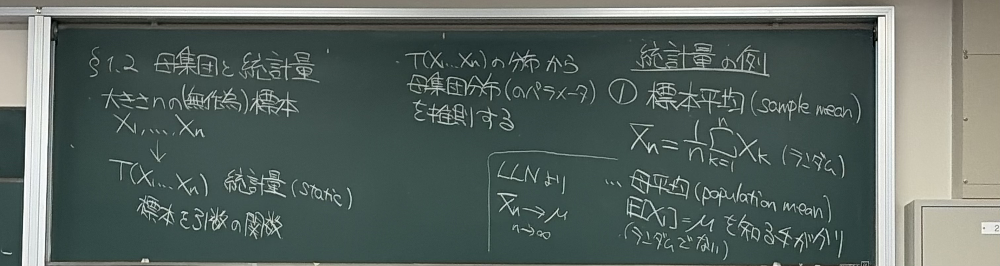
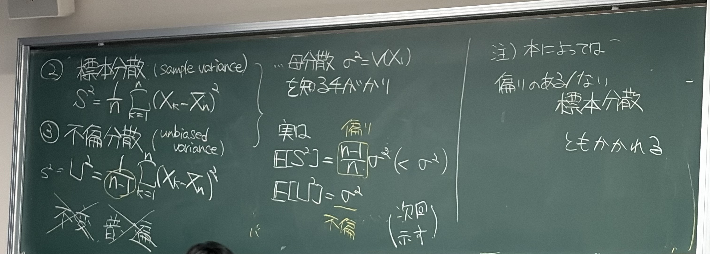
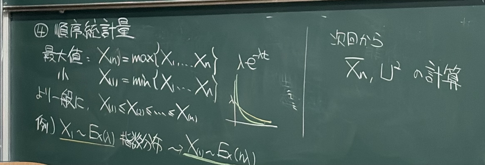

MATHEMATICAL STATISTICS / READING NOTES
母集団と標本
統計量への第一歩
一部のデータから、集団全体をどう知るのか。
平均・分散・最小値を、推測の手がかりとして読む。
母集団と、統計的推測の目的
意味・筋道を理解IMG_3523 · 左の定義 → 右の例・問題点

知りたい対象全体が母集団です。身長の例なら、対象として定めた人々全体を指します。その人たちの身長がどの値にどれだけ分布しているかを、確率の言葉で表したものが母集団分布です。
板書の「すべての情報＝分布」は、調べたい量について、その確率法則が分かるという意味です。身長の分布が分かれば、平均身長や一定の範囲に入る割合などを求められます。個人のあらゆる属性まで分かる、という意味ではありません。
なぜ、一部のデータから調べるのか
全員の測定には費用や時間がかかり、未来の結果はまだ観測できません。コイントスでも、有限回の試行だけから表の確率を誤差なく確定できるとは限りません。そこで、母集団から一部を取り出し、その分析から全体を推測します。
最後の矢印が統計的推測です。前の資料では、母平均などを与えて標本平均の振る舞いを調べました。ここからは、観測したデータを手がかりに、未知の母平均などを知ろうとします。
分布を、パラメーターで表す
意味・条件を理解IMG_3524 · 左の正規モデル → 中央・右の機械学習の例

身長の分布を正規分布で近似するモデルを置くと、未知の分布を調べる問題は、平均 と分散 の2つのパラメーターを推測する問題になります。
正規分布という分布の形を仮定したうえで、2つの値を決めれば、そのモデルの分布全体が決まります。一般の分布は、平均と分散だけでは決まりません。
機械学習の話も「データから未知の値を決める」
中央の図は、入力 x から出力 y を返す関数を、多くのデータから作るというイメージです。右の山の重ね合わせは、複雑な関数も、多数の山の位置や高さなどをパラメーターにして表せる、という説明です。
格子上の高さ をそれぞれ決める模式図では、N × N 個の格子点なら N² 個の値を決めることになります。正規モデルは2個、複雑なモデルは多数という違いがあっても、データからパラメーターを推測する流れは共通します。
補足：右上の分布の図は、どこまで理解するか
講義音声では、入力を固定すると出力に分布がある、という直感を説明しています。確率モデルで表すなら条件付き分布 という見方に対応します。一般の予測関数 f がそのまま確率密度であるとは限りません。この図は機械学習の厳密な定義や特定の実装ではなく、統計とのつながりを示す模式図として読む範囲で十分です。
標本・標本抽出・標本の大きさ
用語と違いを理解IMG_3525 · 左の用語 → 右の復元・非復元抽出

| 用語 | 意味 | 記法・見方 |
|---|---|---|
| 標本 / sample | 母集団から取り出したデータ | |
| 標本抽出 / sampling | データを取り出す操作 | どのような仕組みで選ぶか |
| 標本の大きさ / size | 取り出したデータの個数 | n |
n はデータの値の大小ではなく個数です。理論では、抽出前の値を確率変数 として扱います。実際に観測された値は、区別するとき と書きます。
復元抽出
一つ取り出したら元に戻してから、次を取り出します。抽出のたびに母集団の構成が保たれ、同じものが再び選ばれることもあります。
非復元抽出
取り出したものを戻しません。残った集団の構成は、それまでの抽出結果に依存します。有限集団なら、全て取り出せばその集団を調べ尽くせます。
無作為標本と、独立同分布の仮定
条件まで理解IMG_3526 · 左の無作為標本 → 右の以降の設定

板書の無作為標本は、母集団の各対象を均等な抽出率で選び、さらに互いに影響しないように抽出した標本です。この授業では、復元抽出による無作為標本を考え、確率論では次のように表します。
同分布
どの も、調べたい母集団分布 F に従います。F が未知であっても、共通の確率法則があると仮定して議論できます。
独立
ある抽出結果を知っても、他の抽出結果の確率法則は変わりません。復元したうえで毎回独立に選ぶことが、この仮定を支えます。
同分布でも、独立とは限らない
講義音声にある、赤球1個・白球3個の例で考えます。復元して毎回独立に抽出するなら、次の球が赤である確率は常に 1/4 です。非復元なら、最初に赤を取った後は 0、白を取った後は 1/3 になります。
後者は で求まります。2回目だけを見れば1回目と同じ赤の確率ですが、1回目の結果を知ると確率が変わるので独立ではありません。
統計量と、標本平均
意味・式を理解IMG_3527 · 左の統計量 → 中央の推測 → 右の標本平均

大きさ n の標本を引数に取る関数 が統計量です。標本から目的に応じた量を計算し、その分布を使って母集団やパラメーターを推測します。
標本を取り直せば T の値も変わります。したがって、統計量も確率変数です。n 個のデータから一つの値を計算する操作を繰り返したときの確率法則を、統計量の分布（標本分布）と呼びます。
① 標本平均と母平均
標本平均は、取り出したデータの平均なのでランダムです。母平均は母集団分布で決まる値で、未知であってもランダムな値として扱っているわけではありません。
独立同分布で なら、大数の法則によって次が成り立ちます。これが、標本平均から母平均を推測する根拠です。
さらに有限分散 があれば、、 です。平均の集中と、標準化したゆらぎについては、大数の法則と中心極限定理の解説につながります。
標本分散と、不偏分散
定義・条件・偏りの意味を理解IMG_3528 · 左の2つの定義 → 中央の期待値 → 右の名称の注意

母集団のばらつき を知る手がかりとして、各データと標本平均の差を二乗して足します。同じ平方和を使っても、分母が違うと期待値が変わります。
② 標本分散：分母が n
標本内での「平均からのずれの二乗」を平均した量です。母平均 の代わりに、同じデータから計算した を使っています。
③ 不偏分散：分母が n−1
板書では、小文字 と を同じ不偏分散の記号として使っています。この資料では、2つの分散を見分けやすいように、主に と を使います。n = 1 では ですが、 は定義できません。
「不偏」とは、期待値が目標に一致すること
独立同分布かつ有限分散の仮定の下で、次が成り立ちます。板書では、この計算は次回に示すと予告されています。
は平均的に母分散より小さくなり、その偏りは です。 は平均的には母分散に一致するため不偏と呼びます。1回の標本から求めた が必ず と等しい、という意味ではありません。
補足：次回の計算につながる、偏りの導出
平方和を母平均まわりに書き直すと、
期待値を取ると、右辺は 。これを n で割れば 、n−1 で割れば の式になります。正規分布という仮定は必要ありません。
標本数と「平均的な偏り」
E[S²] / σ²E[U²] / σ² = 1
母分散が正の場合の比を表示。曲線は期待値の厳密な式で、個々の標本で得られる分散の値ではありません。
順序統計量と、指数分布の最小値
定義・計算の筋道を理解IMG_3529 · 左の最大・最小 → 並べ替え → 下の指数分布の例

標本の値を小さい順に並べたものが順序統計量です。括弧付きの添字は、元の抽出順ではなく、並べた後の順位を表します。同じ値があれば、等号を含めて並べます。
最小値
最大値
は「最初に取り出した値」、 は「全体の最小値」です。並べ替えて作る量も標本の関数なので統計量です。元の標本が独立でも、順序統計量どうしが独立になるとは限りません。
例：指数分布の最小値
板書の は、密度が次の形の指数分布です。 は率のパラメーターで、 とします。
独立同分布の標本 の最小値について、板書の結論は次です。
補足：なぜ率が n 倍になるのか
最小値が t より大きいのは、全ての標本が t より大きいときです。 に対し、独立性を使うと、
これは率 の指数分布の生存確率です。したがって累積分布関数は 、密度は になります。標本数を増やすと小さい値が含まれやすくなり、最小値の平均は に小さくなります。
原典に戻る
画像を選ぶと原寸で開きます。







原典の読み順と、この資料の補足について
IMG_3523〜3529 の番号順に、各画像の文章・数式のまとまりを左から右へ、まとまりの中を上から下へ読みました。IMG_3523 と IMG_3524 は「母集団を推測する」という説明が続いています。
講義音声の書き起こしは、統計的推測の動機・モデル化・機械学習とのつながり・抽出・統計量の説明を補うために参照しました。書き起こしには誤認識があり、末尾は統計量の説明途中で途切れています。分散と順序統計量の定義・結論は画像を基準にしています。
「補足」、用語の表、期待値の操作図、分散の期待値と指数分布の最小値の導出は、板書の論理をつなぐために追加したものです。分散の期待値の証明は板書で次回扱うとされているので、折りたたんでいます。過去問・演習資料はこの科目フォルダで確認できないため、出題頻度や証明再現の必要性は判定していません。